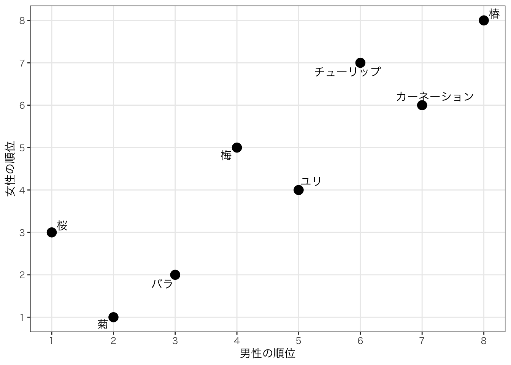
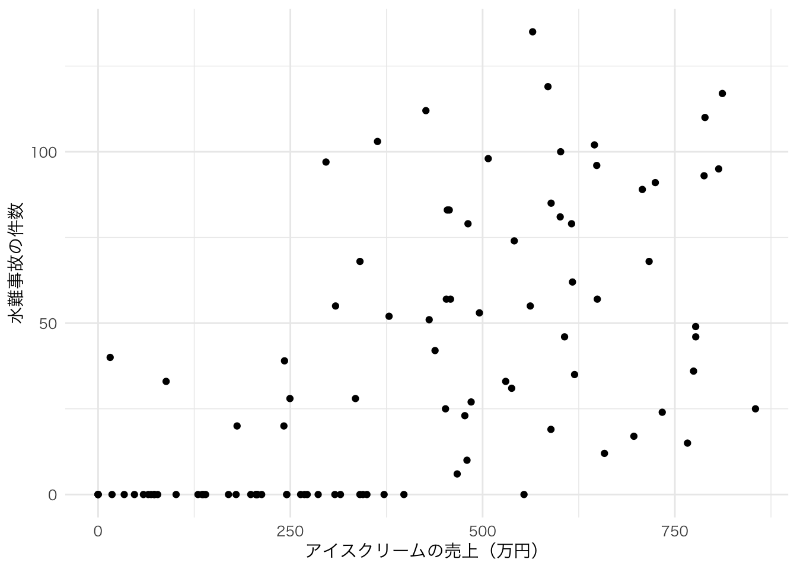
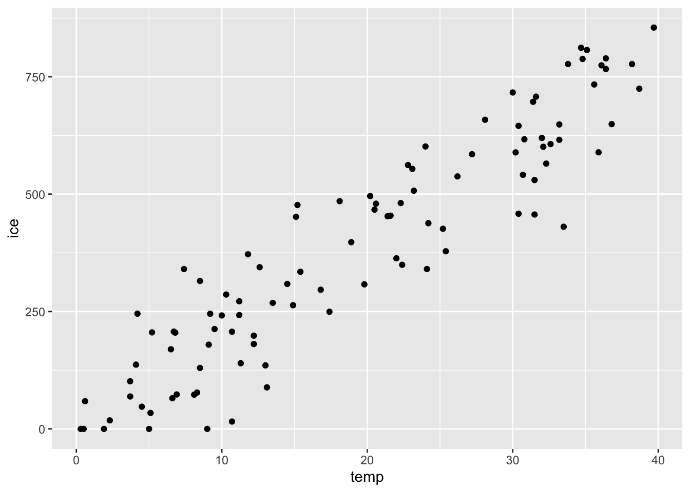

Chapter 10 相関関係
10.1 ２つの変数の関係
実証分析において重要な問いとして「XがYに影響を与えるか」というものである。 例えば、最低賃金を上げると雇用率に影響を与えるか？生徒教員比を減らすと生徒のテストのパフォーマンスはよくなるか？などである。 Xが政策的に変更できる変数であり、Yがなにか経済・社会的に重要な変数ならば、Xを増やす/減らすことでYに影響を与えられる、という政策含意が得られる。
まずは、そもそも2つの変数に統計的な関係があるかを見ていこう。
10.1.1 共分散
共分散は直接解釈するとXの偏差とYの偏差の積の平均、となる。
例えば、次のような5人の国語と算数の試験の点数のデータがあるとする。
## student kokugo sugaku
## 1 A 50 52
## 2 B 50 75
## 3 C 80 62
## 4 D 70 89
## 5 E 90 99それぞれの平均を求めてみよう。
## kokugo_average sugaku_average
## 1 68 75.4それぞれ国語が68点、算数が75.4点という結果である。
Aさんはそれぞれの科目で、平均からどれぐらい離れているか？言い換えると、偏差はいくつだろうか。
\[ 国語の偏差 = 50-68 = -18\\ 数学の偏差 = 52-75.4 = -23.4 \] となる。
偏差の積とは、\(-18\times-23.4\)なので\(421.2\)になる。 5人の偏差とその積をとってみよう。
test |>
mutate(kokugo_hensa = kokugo - mean(kokugo),
sugaku_hensa = sugaku - mean(sugaku)) |>
mutate(hensa_seki = kokugo_hensa*sugaku_hensa)## student kokugo sugaku kokugo_hensa sugaku_hensa hensa_seki
## 1 A 50 52 -18 -23.4 421.2
## 2 B 50 75 -18 -0.4 7.2
## 3 C 80 62 12 -13.4 -160.8
## 4 D 70 89 2 13.6 27.2
## 5 E 90 99 22 23.6 519.2ここで、あることに気づいた人もいるかもしれない。 偏差の積は、どちらもよいかどちらも悪い点数なら、正の数で大きくなり、どちらかが悪くてもう一つがよいと、負の数になる。 このケースで言えば、Aさん（どちらも悪い）や、Eさん（どちらもよい）は、偏差の積が正で大きく、Cさん（国語は良いが数学は悪い）は、偏差の積が負になっている。
この平均を取るということは、どちらも悪い・どちらも良い、という傾向があるか、どちらかが悪いともう片方がよい、という傾向があるかということがわかるということである。
偏差の積の平均を取ってみよう。
test |>
mutate(kokugo_hensa = kokugo - mean(kokugo),
sugaku_hensa = sugaku - mean(sugaku)) |>
mutate(hensa_seki = kokugo_hensa*sugaku_hensa) |>
summarise(hensa_seki_average = mean(hensa_seki))## hensa_seki_average
## 1 162.8ここでは、162.8という正の数となった。
この数字（2つの変数の偏差の積の平均）を共分散と呼び、2つの変数の関係性を測る指標となる。
一般に共分散が正であれば、正の関係がある（Xが大きいときYも大きい傾向がある）、負であれば負の関係がある（Xが大きいとき、Yが小さい傾向がある）。
上の例では、国語の成績がいい人は数学の成績がいい傾向がある、ということになる。
共分散の定義は、以下のような式で定義できる。
\[\sigma_{xy} = \frac{1}{n}\sum^{n}_{i=1}(x_i - \bar{x})(y_i - \bar{y})\]
Rでは、cov()という関数が用意されているが、不偏共分散を推定する関数である。そのため、サンプルサイズが小さい上のようなケースでは、\(n\)で割った場合と大きく異なる数字が出る。
## kyoubunsan
## 1 203.510.1.2 相関係数
共分散は2つの変数の関係を見る指標になると述べたが、実際にはあまり使われない。 その理由は、共分散は単位に依存するからである。 例えば、身長と体重のデータがあるとして、身長とmで測るのか、cmで測るのかで共分散は大きく異なる。
しかし、そもそものデータで標準化すれば、単位の問題はなくなる。
先に定義を提示すると、以下のようになる。
\[ \rho_{xy} = \frac{\sigma_{xy}}{\sigma_x \sigma_y} \]
言葉で説明すれば、相関係数とは共分散をXとYのそれぞれの標準偏差で割った数字である。 単位が大きければばらつきも大きくなるわけなので、そのばらつき自体で割ってしまえば単位に依存しない偏差を計算できるというわけである。
上のテストデータで計算してみよう。
test |>
mutate(kokugo_hensa = kokugo - mean(kokugo),
sugaku_hensa = sugaku - mean(sugaku)) |>
mutate(hensa_seki = kokugo_hensa*sugaku_hensa) |>
summarise(hensa_seki_average = mean(hensa_seki),
kokugo_sd = sd(kokugo),
sugaku_sd = sd(sugaku),
soukan_keisu = hensa_seki_average/(kokugo_sd*sugaku_sd))## hensa_seki_average kokugo_sd sugaku_sd soukan_keisu
## 1 162.8 17.88854 19.16507 0.4748637相関係数は相関の程度を表す係数であり、\(-1\)から\(1\)までの実数を取る。数字が負であれば、負の関係があり、正であれば正の関係がある。絶対値が1に近いほど、その関係が強いことを表している。
相関係数を計算する関数には、corが用意されている。こちらも、共分散を計算する際にn-1で割るため、サンプルサイズが小さい場合はnで割った場合と大きく異なる数字が出る。
## [1] 0.5935796
10.2 相関関係と因果関係
ここまでは２つの変数の関係として、相関関係を議論してきた。 しかし、社会科学の実証分析で重要な点として、相関関係は必ずしも因果関係を意味しないということがある。
たとえば、下の図はある年の日ごとのアイスクリームの売上と水難事故の件数だとする。

このことから、アイスクリームの売上と水難事故件数には相関関係がありそうだ。実際に計算してみても、相関係数は0.63と計算された。
しかし、この２つの間に因果関係はあるだろうか？ 例えば、アイスクリームの売上を増やすと水難事故も増えるのだろうか？ では、政策的含意として、アイスクリームの販売に規制をかけて売上を増やさないようにすることで、水難事故を防ぐことはできるのだろうか？
もちろんできない。
この２つの変数の後ろには気温という別の変数が隠れている。

気温が高ければ、人々はアイスクリームを買って食べるし、川や海にレジャーに行くため水難事故の絶対数も増えてしまう。
しかし、アイスクリームと水難事故には直接の関係はないのである。 このような相関関係を見せかけの相関と呼ぶ。
3つの変数の相関係数をそれぞれ計算してみよう。
## temp ice accident
## temp 1.0000000 0.9293655 0.6948090
## ice 0.9293655 1.0000000 0.6334513
## accident 0.6948090 0.6334513 1.0000000ここではdayは実際には変数ではないので無視する。
気温(temp)とアイスクリームの売上(ice)は0.93と非常に強い相関関係がある。
気温(temp)と水難事故(accident)も0.69とある程度強い相関関係になっている。
アイスクリームの売上と水難事故も0.63と強い相関関係があるが、果たしてその相関関係はどちらかがどちらかに直接影響を与えるような関係なのだろうか？
10.2.1 偏相関係数
見かけ上の相関が疑われ、その間にある第3の変数がわかっている場合は、偏相関係数を用いることで相関を測ることができる。 第3の変数を\(z\)とすると、
\[ \rho_{xy,z} = \frac{\rho_{xy}-\rho_{xz}\rho_{zy}}{\sqrt{1-\rho_{xz}^2}\sqrt{1-\rho_{yz}^2}} \]
で表される。
上の場合では、気温という第3の変数の影響を除いた後のアイスクリームの売上と水難事故の相関係数に当たる。
10.2.1.1 Rによる偏相関係数の推定
Rで偏相関係数を計算する場合は、ppcorパッケージのpcor関数を使う。
## temp ice accident
## temp 1.0000000 0.8791336 0.3714375
## ice 0.8791336 1.0000000 -0.0462535
## accident 0.3714375 -0.0462535 1.0000000偏相関係数の結果を見てみると、気温(temp)とアイスクリームの売上(ice)は0.88と、水難事故の影響を除いても非常に強い相関関係がある。
気温(temp)と水難事故(accident)も0.37と、ある程度の正の相関関係が残っている。
アイスクリームの売上と水難事故は、気温の影響を除くと-0.05とほとんどゼロに近い相関係数であり、気温を通した関係以外はないことがわかる。
10.3 順位相関係数
上の相関係数は、一般に積率相関係数と呼ばれていて、量的な変数に用いられる。 しかし、質的な基準（例えばランキング）の場合は直接積率相関係数を適用することができない。
例：男性と女性にそれぞれどの花が好きかというアンケート調査をした結果、以下のような順位になったとする。女性と男性の傾向に相関関係はあるのだろうか？
| 花 | 男 | 女 |
|---|---|---|
| 桜 | 1 | 3 |
| 菊 | 2 | 1 |
| バラ | 3 | 2 |
| 梅 | 4 | 5 |
| ゆり | 5 | 4 |
| チューリップ | 6 | 7 |
| カーネーション | 7 | 6 |
| 椿 | 8 | 8 |
図で描くと以下のような形になる。
# データ準備
dat_flower = tibble(
flower = c("桜","菊","バラ","梅","ユリ","チューリップ","カーネーション","椿"),
male = c(1,2,3,4,5,6,7,8),
female = c(3,1,2,5,4,7,6,8)) |>
mutate(flower = fct_reorder(flower,male))
# 整然データ化
dat_flower_long = dat_flower |>
pivot_longer(cols=ends_with("male"),
names_to = "gender",values_to="rank_flower") データを”散布図”で描いてみよう。
ggplot(dat_flower,aes(x=male,y=female)) +
geom_point(size=4) +
geom_text_repel(aes(label=flower), family="HiraKakuPro-W3") +
theme_bw(base_family = "HiraKakuPro-W3") +
scale_x_continuous(breaks = 1:8) +
scale_y_continuous(breaks = 1:8) +
labs(y="女性の順位", x="男性の順位") +
theme(panel.grid.minor = element_blank())図で描いてみると、なんとなく似た傾向があるように見えるが、これをどう定量的に表すのか？
もし、男女の順位が完全に一致していると、以下のような図になる。
| flower | male | female |
|---|---|---|
| 桜 | 1 | 1 |
| 菊 | 2 | 2 |
| バラ | 3 | 3 |
| 梅 | 4 | 4 |
| ユリ | 5 | 5 |
| チューリップ | 6 | 6 |
| カーネーション | 7 | 7 |
| 椿 | 8 | 8 |

このときは正の相関があることがわかるだろう。
全く男女の順位が逆であったらどうだろうか。
| flower | male | female |
|---|---|---|
| 桜 | 1 | 8 |
| 菊 | 2 | 7 |
| バラ | 3 | 6 |
| 梅 | 4 | 5 |
| ユリ | 5 | 4 |
| チューリップ | 6 | 3 |
| カーネーション | 7 | 2 |
| 椿 | 8 | 1 |
男女の順位に関係がなければどんな散布図になるだろうか。
| flower | male | female |
|---|---|---|
| 桜 | 1 | 6 |
| 菊 | 2 | 2 |
| バラ | 3 | 4 |
| 梅 | 4 | 8 |
| ユリ | 5 | 1 |
| チューリップ | 6 | 3 |
| カーネーション | 7 | 5 |
| 椿 | 8 | 7 |

ばらばらで男女の順位に関係がなさそうなことは直感的にはわかる。
これをどう定量的に表せばいいのだろうか？
10.3.1 スピアマンの順位相関係数
相関係数でよく使われるものには二種類ある。一つはスピアマン(Spearman)の順位相関係数、もう一つはケンドール(Kendall)の順位相関係数である。
スピアマンの順位相関係数では、2つの系列の順位の差を二乗したものを計算する。
\[ r_{s} = 1-\frac{6}{n^3-n}\sum^{n}_{i=1}(R_i - R_{i}')^2 \]
このスピアマンの順位相関係数では、数値が１に近いほど相関が強く、-1になるほど離れるほど逆の相関がある。
オリジナルデータのそれぞれの順位差
| flower | male | female | 順位差 | 順位差２乗 |
|---|---|---|---|---|
| 桜 | 1 | 3 | -2 | 4 |
| 菊 | 2 | 1 | 1 | 1 |
| バラ | 3 | 2 | 1 | 1 |
| 梅 | 4 | 5 | -1 | 1 |
| ユリ | 5 | 4 | 1 | 1 |
| チューリップ | 6 | 7 | -1 | 1 |
| カーネーション | 7 | 6 | 1 | 1 |
| 椿 | 8 | 8 | 0 | 0 |
もし、完全に一致する順位ならば、\(\sum^{n}_{i=1}(R_i - R_{i}')^2\)に部分は０になる。一方で、もし真逆の順位ならば、その部分はとても大きくなる。
完全に順位が一致するケースのそれぞれの順位差
| flower | male | female | 順位差 | 順位差２乗 |
|---|---|---|---|---|
| 桜 | 1 | 1 | 0 | 0 |
| 菊 | 2 | 2 | 0 | 0 |
| バラ | 3 | 3 | 0 | 0 |
| 梅 | 4 | 4 | 0 | 0 |
| ユリ | 5 | 5 | 0 | 0 |
| チューリップ | 6 | 6 | 0 | 0 |
| カーネーション | 7 | 7 | 0 | 0 |
| 椿 | 8 | 8 | 0 | 0 |
順位が真逆のケースのそれぞれの順位差
| flower | male | female | 順位差 | 順位差２乗 |
|---|---|---|---|---|
| 桜 | 1 | 8 | -7 | 49 |
| 菊 | 2 | 7 | -5 | 25 |
| バラ | 3 | 6 | -3 | 9 |
| 梅 | 4 | 5 | -1 | 1 |
| ユリ | 5 | 4 | 1 | 1 |
| チューリップ | 6 | 3 | 3 | 9 |
| カーネーション | 7 | 2 | 5 | 25 |
| 椿 | 8 | 1 | 7 | 49 |
順位がばらばらのケースのそれぞれの順位差
| flower | male | female | 順位差 | 順位差２乗 |
|---|---|---|---|---|
| 桜 | 1 | 6 | -5 | 25 |
| 菊 | 2 | 2 | 0 | 0 |
| バラ | 3 | 4 | -1 | 1 |
| 梅 | 4 | 8 | -4 | 16 |
| ユリ | 5 | 1 | 4 | 16 |
| チューリップ | 6 | 3 | 3 | 9 |
| カーネーション | 7 | 5 | 2 | 4 |
| 椿 | 8 | 7 | 1 | 1 |
10.3.2 ケンドールの順位相関係数
もう一つの順位相関係数であるケンドールの順位相関係数は、データの中の順位の相対的な違いに注目する。
もしデータは正順である場合は、そのペアに1を与える。正順であるとは\(i\)と\(j\)という項目について、ある系列では順位が\(R_i > R_j\)である場合にもう一つの系列でも\(R_i' > R_j'\)であることをいう。 これは\((R_i-R_j)(R_i'-R_j')>0\)とも表現できる。
データが逆順であるる場合は、そのペアに-1を与える。逆であるとはある系列では順位が\(R_i > R_j\)である場合にもう一つの系列でも\(R_i' < R_j'\)であることをいう。これは\((R_i-R_j)(R_i'-R_j')<0\)とも表現できる。
花のデータで言えば、男性の順位では桜（1位）は菊（2位）より順位が上（数字が小さい）ので\(R_桜 < R_菊\)であるが、女性の順位では桜（3位）は菊（1位）より下（数字が大きい）であるため、\(R_桜' > R_菊'\)となるため、桜と菊のペアには-1が与えられる。
ケンドールの順位相関係数では、すべてのペアに1か-1を与えて、1のペアの数と-1のペアの数をそれぞれ集計する。その差を取って、ペアの数で割った数である。 1のペアの数が\(G\), -1のペアの数が\(H\)だとすると、
\[ \tau = \frac{G-H}{n(n-1)/2} \] と定義される。 この値も、完全に順位が一致していれば、+1, 完全に逆ならば-1を取る。
ちなみに、この相関係数は元のデータが順位でなくても計算する事が可能である。なぜなら、ペアに対して与えるのは大小なので、数値そのものを使ったとしても、\(x_i > x_j\)と\(y_i > y_j\)ならば正順、というように各ペアに+1か-1を割り当てることが可能だからである。
10.3.2.1 計算例
実際にケンドールの相関係数を手計算で行うことで理解してみよう。 手計算で行うために、縮小版として4つの花で聞いたとするデータを使う。
dat_flower5 = tibble(
flower = c("桜","菊","梅","椿"),
male = c(1,2,3,4),
female = c(2,1,4,3)) |>
mutate(flower = fct_reorder(flower,male))
knitr::kable(dat_flower5)| flower | male | female |
|---|---|---|
| 桜 | 1 | 2 |
| 菊 | 2 | 1 |
| 梅 | 3 | 4 |
| 椿 | 4 | 3 |
４つの花で聞いた男女の順位は上のようだとする。 この場合のケンドールの相関係数はすべてのペアについ男女２つの系列において順位を評価して、ペアを評価する。 具体的には以下のように計算する。
| ペア | 男性順位の比較 | 女性順位の比較 | ペア評価 |
|---|---|---|---|
| 桜と菊 | 1 < 2 | 2 > 1 | 逆順 |
| 桜と梅 | 1 < 3 | 2 < 4 | 正順 |
| 桜と椿 | 1 < 4 | 2 < 3 | 正順 |
| 菊と梅 | 2 < 3 | 1 < 4 | 正順 |
| 桜と椿 | 2 < 4 | 1 < 3 | 正順 |
| 梅と椿 | 3 < 4 | 4 > 3 | 逆順 |
正順(+1)が4つなので\(G=4\)で、逆順(-1)が2つなので\(H=2\)である。
ペアの数は\(4(4-1)/2 = 6\)である。
これをあてはめると \[ \tau = \frac{4-2}{6} = 1/3 \simeq 0.33 \]
この場合は、弱いが正の相関があるといえる。